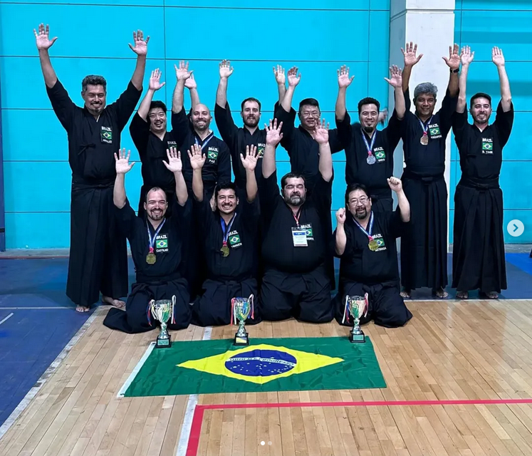
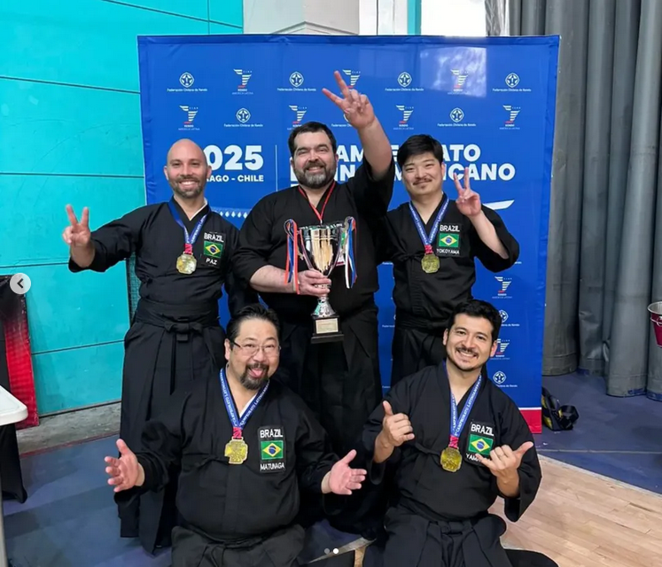

Notícias
Brasil em destaque no 2º Campeonato Latino-americano de Iaido
Praticantes brasileiros de Iaido no campeonato.
19/10/2025
'O 2º Campeonato Latino-americano de Iaido, organizado pela Confederação Latino-americana de Kendo (CLAK), ocorreu em Santiago, Chile, entre os dias 17 e 19 de outubro, com o apoio da Federação Chilena de Kendo (FECHKEN).
Destacou-se neste evento, além da presença de renomados Sensei do continente Americano, liderado por Ito Shigo Sensei (Iaido Hanshi 8º Dan) e a realização de exames para 6º Dan de Iaido, o desempenho extraordinário da comitiva brasileira de Iaido, conquistando resultados em diversas categorias.
Confira abaixo os resultados da seleção brasileira de Iaido no 2o Campeonato Latino-americano:
Campeões Individuais:
1º Dan: Frank Yuddy Matunaga
2º Dan: Bruno Castilho
4º Dan: Yuji Yamauchi
Vice-Campeão:
3º Dan: Felipe Teruo
3º Lugar:
1º Dan: Amauri Albuquerque
3º Dan: João Paz
Campeonato por Equipes:
Campeão Latino-americano por Equipes:
Equipe: Yuji Yamauchi 4° Dan, Caio Yokoyama 3° Dan, Frank Yuddy Matunaga 1° Dan, João Paz 3° Dan.
Técnico: Sensei Carlos Fernando 5° Dan
A Genbukan Brasil parabeniza todos os Kenshi da comitiva brasielira de Iaido e sua conquista extraordinária, cujo resultado consagra um marco na história do Iaido Latino-americano.
Campeões Latino-americano por Equipes.